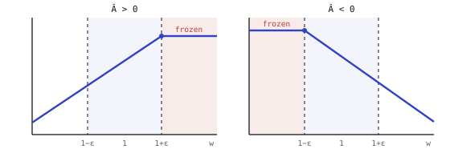
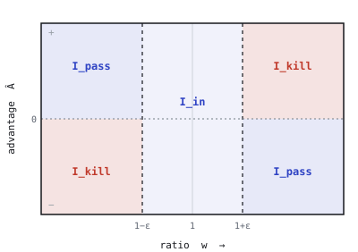

At each update PPO improves a policy \(\pi_{\theta'}\) over the policy \(\pi_\theta\) that collected the rollout. How far \(\pi_{\theta'}\) has moved on a sampled action \((s_t,a_t)\) is measured by the importance ratio \(w_t=\pi_{\theta'}(a_t\mid s_t)/\pi_\theta(a_t\mid s_t)\), and how good the action was by the advantage \(\hat A_t\) (from GAE).
PPO-Clip and PPO-KL are two ways of keeping \(w_t\) close to one. They read as different algorithms, yet on every sample they descend the same gradient.
Writing \(w_t^{(i)}\) and \(\hat A_t^{(i)}\) for the ratio and advantage of sample \((i,t)\), maximising the importance-sampled return \(\mathbb{E}_t[w_t\hat A_t]\) directly is unstable, because \(w_t\) can grow large. PPO-Clip caps it,
so the objective stops rewarding a sample once its ratio leaves the band \([1-\epsilon,\,1+\epsilon]\) in the advantage-improving direction.

Which argument of the inner \(\min\) is active depends only on \((w_t,\hat A_t)\). Fix \(\theta'\); the samples fall into three disjoint sets:
On \(\mathcal I_{\mathrm{in}}\) the clip is inactive. On \(\mathcal I_{\mathrm{kill}}\) the policy is already moving in the advantage-improving direction and the clip suppresses the update. On \(\mathcal I_{\mathrm{pass}}\) the ratio is outside the band but the move is corrective, so the unclipped term stays active.

The gradient of a sum is the sum of gradients, so it is enough to differentiate one sample. The inner \(\min\) is piecewise linear in \(w_t\): on \(\mathcal I_{\mathrm{in}}\cup\mathcal I_{\mathrm{pass}}\) the unclipped term is active and contributes the ordinary policy-gradient; on \(\mathcal I_{\mathrm{kill}}\) the clipped constant is active and contributes nothing.
Now take the PPO-KL surrogate that adds, to each sample, a log-probability penalty with its own coefficient \(\beta_t^{(i)}\), evaluated at the current \(\theta'\) and held fixed (stop-gradient) when differentiating. Differentiating and collecting the score function \(\nabla_{\theta'}\pi_{\theta'}/\pi_\theta\) gives
The two contributions match exactly when the bracket equals \(\hat A_t^{(i)}\) on \(\mathcal I_{\mathrm{in}}\cup\mathcal I_{\mathrm{pass}}\) and \(0\) on \(\mathcal I_{\mathrm{kill}}\). One choice of \(\beta_t^{(i)}\) does both.
Let \(\mathcal L_{\mathrm{KL}}\) be the PPO-KL surrogate whose per-sample coefficient \(\beta_t^{(i)}\) is a stop-gradient (detached) coefficient, evaluated at the current \(\theta'\) and held fixed under differentiation, with
\[ \beta_t^{(i)} = \begin{cases} 0, & (i,t)\in\mathcal I_{\mathrm{in}}\cup\mathcal I_{\mathrm{pass}},\\[2pt] -\,w_t^{(i)}\hat A_t^{(i)}, & (i,t)\in\mathcal I_{\mathrm{kill}}. \end{cases} \]Then \(\;\nabla_{\theta'}L_{\mathrm{CLIP}}=\nabla_{\theta'}\mathcal L_{\mathrm{KL}}\;\) at every \(\theta'\) where \(L_{\mathrm{CLIP}}\) is differentiable, that is, wherever no sample sits exactly on a clip boundary \(w_t^{(i)}=1\pm\epsilon\) (a measure-zero set where the clip has a kink).
Fix a sample \((i,t)\). The PPO-Clip and PPO-KL contributions differ only through the bracket \(\hat A_t^{(i)}+\beta_t^{(i)}/w_t^{(i)}\), and \(\beta_t^{(i)}\) sets it to one of two values.
Case \(\mathcal I_{\mathrm{in}}\cup\mathcal I_{\mathrm{pass}}\). Here \(\beta_t^{(i)}=0\), so the bracket is \(\hat A_t^{(i)}\) and \(g_t^{(i)}(\mathcal L_{\mathrm{KL}})=\hat A_t^{(i)}\,\nabla_{\theta'}\pi_{\theta'}/\pi_\theta =g_t^{(i)}(L_{\mathrm{CLIP}})\).
Case \(\mathcal I_{\mathrm{kill}}\). Here \(\beta_t^{(i)}=-w_t^{(i)}\hat A_t^{(i)}\), so the bracket is \(\hat A_t^{(i)}-w_t^{(i)}\hat A_t^{(i)}/w_t^{(i)}=0\) (using \(w_t^{(i)}>0\)), hence \(g_t^{(i)}(\mathcal L_{\mathrm{KL}})=0=g_t^{(i)}(L_{\mathrm{CLIP}})\).
The per-sample contributions agree on every \((i,t)\); summing gives the result. \(\blacksquare\)
The sign of \(\beta_t^{(i)}\) matches the trust-region intuition. When \(\hat A_t>0\) and \(w_t>1+\epsilon\), the policy already over-weights a good action, and a negative \(\beta_t\) pulls \(\log\pi_{\theta'}\) back. When \(\hat A_t<0\) and \(w_t<1-\epsilon\), it already under-weights a harmful one, and a positive \(\beta_t\) holds it. In both cases the effective advantage is driven to zero, reproducing the clip. The identity is exact at every \(\theta'\) off the clip boundary, strengthening the first-order, near-\(\theta_{\mathrm{old}}\) observation of Schulman et al. (2017).
The same constraint can be written without ever leaving importance-weight space. Here the penalty acts on how far \(w_t\) overshoots the band, rather than on \(\log\pi_{\theta'}\).
PPO-Clip equals \(\;\frac1N\sum_{i,t}\big[w_t^{(i)}\hat A_t^{(i)}-\Phi(w_t^{(i)},\hat A_t^{(i)})\big]\;\) with
\[ \Phi(w,\hat A)=\begin{cases} \big(w-(1+\epsilon)\big)\,\hat A, & w>1+\epsilon,\ \hat A>0,\\[3pt] \big(w-(1-\epsilon)\big)\,\hat A, & w<1-\epsilon,\ \hat A<0,\\[3pt] 0, & \text{otherwise.} \end{cases} \]For \(w>1+\epsilon,\ \hat A>0\) the clipped product is \((1+\epsilon)\hat A=w\hat A-(w-(1+\epsilon))\hat A=w\hat A-\Phi\); the case \(w<1-\epsilon,\ \hat A<0\) is symmetric; otherwise the unclipped term is the minimum and \(\Phi=0\). Summing over samples gives the form. \(\blacksquare\)
\(\Phi\ge 0\) on \(\mathcal I_{\mathrm{kill}}\): PPO-Clip subtracts a penalty proportional to how far \(w\) exceeds the band, on exactly the kill samples.
Together, PPO-Clip has three forms that share one per-sample gradient and differ only in the space the penalty lives in:
| form | per-sample loss | penalty acts in |
|---|---|---|
| min | \(\min(w_t\hat A_t,\ \mathrm{clip}(w_t)\hat A_t)\) | hidden in the min |
| \(\Phi\) | \(w_t\hat A_t-\Phi(w_t,\hat A_t)\) | importance-weight space |
| \(\beta_t\) | \(w_t\hat A_t+\beta_t\log\pi_{\theta'}(a_t\mid s_t)\) | distribution space |
The full statements, the PPO-KL gradient derivation and every proof are in the paper. paper.